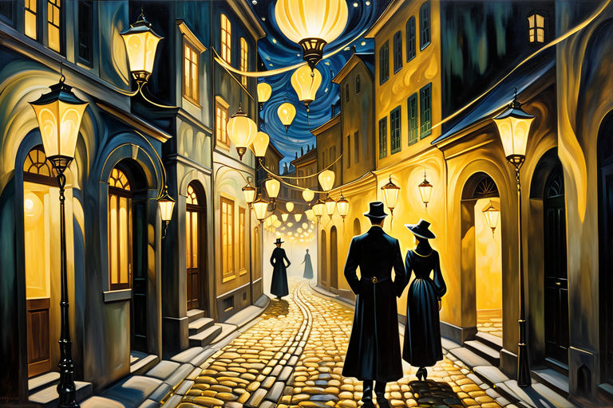
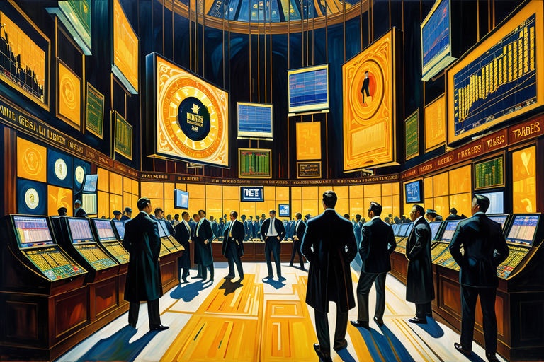
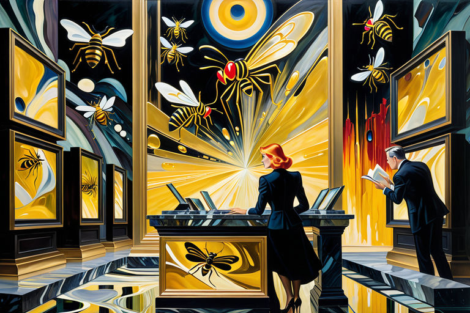

Αντίλαλοι μιας Χρυσής Καταιγίδας
Αρχική Σελίδα
Πίνακας Περιεχομένων
Αντίλαλοι μιας Χρυσής Καταιγίδας
Πειρασμοί στην ομίχλη

Σε γραφικές, ξεχασμένες γωνιές χαμηλοφωτισμένων πόλεων, ψιθυρίζεται ανάμεσα στους νυχτερινούς περιπλανώμενους - αυτούς με διακριτικά ρουθούνια - ότι οι φερομόνες τραγουδούν, οι φωνές τους μια αποπνικτική συμφωνία που παρασύρει τους αναζητητές της σαρκικής γνώσης να ακολουθήσουν.
Χρυσοί ελκυστές είναι αυτές οι μυρωδιές, εκτοξεύουν βέλη επιθυμίας και λαγνείας στους υποδοχείς: συνδετοί δεσμοφύλακες φρουρούν το φρούριο της ανθρώπινης λαχτάρας. Ένα επιτρεπτό πέπλο πειρασμού, καθώς οι πύλες αιωρούνται διάπλατα για να απελευθερώσουν ότι εγκλείεται μέσα: η ζωώδης φύση του ανθρώπου, που κρύβεται πίσω προσωπείων ευγένειας και περιορισμού.
Ήταν εκείνη την μοιραία νύχτα στην ανεπιτήδευτη πόλη Αρβολόφου που συνέβη. Οι δρόμοι, σκεπασμένοι κάτω από τον μανδύα του σκότους, υποδέχτηκαν τις τρυφερές πινελιές της δροσιάς. Και καθώς οι σκιές χόρευαν πάνω σε λιθόστρωτα, έτσι κι οι ψίθυροι αχαλίνωτης λαχτάρας ελίσσονταν στα σοκάκια που φιλούσαν την ομίχλη.
Ο αέρας παλλόμενος, ρυθμικός και επίμονος - οι φερομονικοί έλικες μπλέκονταν, σχηματίζοντας θηλιές δολωμένες με αστραπιαία γοητεία. Ένα κάλεσμα σειρήνας στους απελπισμένους, τους περίεργους και τους κολασμένους. Οριοθετώντας περασμένες πόρτες και κουφώματα, αναζήτησαν αυτούς τους αναζητητές: ανθρώπινοι πύραυλοι αναζητητούν θερμότητα, εκπέμπουν στις συχνότητες της επιθυμίας.
Ξεκίνησε με έναν μόνο βήχα, ένα τρέμουλο, διστακτική εισαγωγή στην ησυχία. Ανελέητο, τρέμουλο που πλέκει στο σκοτάδι: μια κλωστή αδιέξοδη, συνδέει το απρόσμενο με το αναμένον. Με κάθε διστακτικό βήμα, το άρωμα μπλέκονταν πιο σφιχτά, τα χρυσά νήματα το παγιδεύουν μέχρι τα πέπλα να ραγίσουν.
Η κραυγή του δημοπράττη

Ήρθε ο παροξυσμός - πυρετώδης, λυσσαλέα αναζήτηση. Επιχρυσωμένα θέλγητρα αστράφτουν σε παχύρρευστο σκοτάδι, πεινασμένα, κυνηγημένα, καλεσμένα. Ασταθές ανακάτεμα, αναπνοές λαχανιάσμένες, σκώροι μαγνητισμένοι από τη χρυσή φλόγα. Τα λιθόστρωτα δρομάκια έτρεμαν απο κρότο πατημάτων.
Κατακόρυφη πτώση, κατάρευση: η τιμή του χρυσού κυλάει παρακάτω. Ναοί από γυαλί και μέταλλο, κρόταφοι χλωμοί, οι φωνές υψωμένες, δάχτυλα πατούν πάνω σε επιφάνειες. Σηματοδότες αναβοσβήνου, ψάλλουν παραμύθια τους για νόμισμα υποτιμημένο. Οι οθόνες φωτίζουν με κόκκινο, μπλε, λευκό - ειδοποιήσεις για προφανή πτώση.
Στην οθόνη, οι αναγνώστες ειδήσεων μίλησαν, με το κοκκινοβαμένα χείλη τους διαμορφώνουν λέξεις για παρηγοριά. «Χωρίς φόβο», είπαν ψέματα, «αγόρασε χαμηλά, πούλαγε ψηλά». Ωστόσο, σε σκιές πέρα από τη λάμψη της οθόνης, η ανησυχία ροκάνιζε.
Οι μυρωδιές εντάθηκαν, η ισχύς κατακλύστηκε, ένα ελιξίριο ευμάρειας. Φερομόνες έσκασαν: βαρείς, μία δοσολογία αποσταγμένη για να κυκλώσει τους πρόθυμους.
Οι τιμές εκτινάσσονται στα ύψη, επιχρυσωμένη ισοπέδωση. Παλμικές ειδοποιήσεις, προειδοποιήσεις εκρήξεων. Οι φόβοι των παγιδευμένων εμπόρων φουντώνουν, κροταλίζουν: σκάνε οι σπόροι καλαμποκιού, φτύσιμο, ένταση.
Κάτω από τους προσεκτικούς φακούς, κρυμμένα πρόσωπα ανησυχούν: το πέρασμα του χρόνου. Περνώντας δάχτυλα: εμπόριο, ανταλλαγή, αγορά.
Ο δημοπράτης τσιρίζει, η προσφορά αρχίζει, άγρια, ατρόμητη. Μάτια λαμπερά, στόματα μισάνοιχτα, χέρια στον αέρα: κυματίζουν, τσακώνονται, κουνιούνται απειλητικά. Επιχρυσωμένο, πετούμενο ιατρικό: παρασύρεται, χορεύει, παραπαίει.
Ψέματα κοκκινοβαμμένων χειλιών από τους αναγνώστες ειδήσεων: “Πανικός κανένας, οι ταλαντεύσεις της αγοράς είναι κυκλικές. Τιμή φερομόνης: αστέρια εκρήγνυνται, φωτεινά, πυρακτωμένα. Αδιαφανείς οθόνες λαμπερό κεχριμπαρένιο, ακτινοβολούν - λιωμένές πολυτέλειες φωτισμένες από λάβα. Τα δάχτυλα κινούνται, σέρνουν χτυπήματα: χορεύουν, τρελά ψηφία, αγχωμένοι πωλητές.
Οι αναγνώστες ειδήσεων μουρμουρίζουν, μιλούν, φωνάζουν, ουρλιάζουν. Τιμή φερομόνης: αστρονομική, φρικτή, παράλογη. Ασημένια οθόνη αναβοσβήνει: υπερέκρηξη αστέρων. Φερομόνες, περιουσιακό στοιχείο καινούργιο, περιουσιακό στοιχείο πιο χρυσό, ακόμα και απ`το χρυσό.
Χρυσοδάκτυλος φρενίτης

Πορεία τρέλας στην αγορά: ο επίχρυσος πυρετός τα πιάνει όλα. Σπείρα προς τον ουρανό σε φερομονική πανδαισία. Στην οθόνη, τα κοκκινοβαμένα χείλει ψεύδονται: “Όχι πανικός!”
Οι ουρανοί γεμάτοι με λαμπυρίζοντα γιατροσόφια, ανακλούν την ξέφρενη φρενίτιδα. Οι επιχρυσωμένες οθόνες κράζουν προειδοποιήσεις. Κρυφοί, μασκοφόροι ταράζουν, αναθυμιάζονται: το πέρασμα του χρόνου γλιστράει μέσα από τα χέρια. Τα δάχτυλα φρενήρα: πάτημα, πάτημα, πάτημα, κύλιση, κύλιση, κύλιση.
Δάχτυλα σταυρώνουν τον γυάλινο γρανίτη: πάτημα, χτύπημα πληκτρολόγησης, ανίχνευση μάταιων προσπαθειών για αποφυγή καταστροφής ή αποκομιδή ανταμοιβής. Ασημένια χείλη, κυρτά κοράλλια, σχηματίζουν μισόλογους ελπίδες με γλυκούς ψιθύρους.
Τα χείλη των αναγνωστών ειδήσεων τρέμουν, κουλουριάζονται σε γελωτοποιά χαμόγελα. Κινηματογράφηση σε πρώτο πλάνο, βαρίδι, σπρώξιμο, γραφικές ζωγρφιές ανησυχίας. Καπνιστά γέλια, ομιχλώδη γέλια ξεχύνονται, μουντά λοφία από κραυγαστούς γέλωτες.
Ανενόχλητοι, στην οθόνη, ψευδόμενα χείλια αναγνωστών ειδήσεων σμέζονται, “Πανικός περιττός! Οι μετοχές εκτινάσσονται στα ύψη! Ο χρυσός που κατέρρεε ανεβαίνει ξανά!” Ωστόσο, ανείπωτοι φόβοι, ανυπόκριτες ανησυχίες υψώνονται, αόρατες αράχνες περιστρέφονται στους επιχρυσωμένους ιστούς των ξεχασμένων.
Γυαλιστερές αραχνοειδείς φερομόνες κατασπαράσουν, οι κλωστές τους παγιδεύουν χαμένα χρυσά έντομα. Οι ασταθείς αποτιμήσεις φύτρωσαν κυνόδοντες, βυθίζονται βαθιά στο μυαλό των επενδυτών, ψιθυρίζουν κέρδη και ζημίες. Η κάποτε σταθερή αγορά υπέκυψε στην αναρχία, καθώς οι αραχνοειδείς φερομόνες χορεύουν, το δηλητήριό τους κυλά, παγιδεύοντας μέσα σε όλα τα επιχρυσωμένα κλουβιά της αγοράς.
Οι ασημένιοι αναγνώστες ειδήσεων τραγουδούσαν, μαγευτικά ξέφρενα σμήνος, τα μάτια τους λάμπουν, καθώς κάθε χρυσαφένιο έντομο σπρώχνεται για πρώτη θέση στους περίπλοκους επιχρυσωμένους ιστούς. Περικοκλάδες φόβου και απληστίας έρπονται στο πλήθος, τρέμουν, διαφθείρουν, καθώς περισσότεροι επενδυτές φώναζαν να συμμετάσχουν.
Απαρατήρητα, επιχρυσωμένα κλουβιά σιωπηλά κλειστά, δεμένα μέσα στο ασφυκτικό κλοιό της φερομονικής πανώλης. Μέσα στον χρυσό ιστό, οι αραχνοειδείς φερομόνες ανατρίχιασαν, χόρτασαν, νικητές στην κακόβουλη κυριαρχία τους. Ψηλά, τα χείλη των αναγνωστών ειδήσεων πιέζονταν σφιχτά, ένα αναγκαστικό χαμόγελο κρύβει τα πιο ζοφερά μυστικά.
Αραχνοειδείς και Επιχρυσωμένες Παγίδες

Οι φερομόνες επιμένουν, καυστικές, ισχυρές, προκλητικές. Ο χρυσοδεμένος άνεμος μαστιγώνει χαρούμενο χάος, ανεμοστρόβιλοι πλούτου και θλίψης. Η τρέλα της αγοράς βρυχάται, θορυβώδης, κυλιόμενη, εκτοξεύεται προς τα πάνω σε επιχρυσωμένη δόξα. Ωστόσο, τα άρρητα μυστικά ξεγλιστρούν.
Εν τω μεταξύ, αόρατες μάζες σκαρφαλώνουν στο σκοτάδι, ξεχασμένες, απογοητευμένες και φοβισμένες. Τα δάχτυλα πετούν μακριά, άσκοπες παρακλήσεις σε αέρινο τίποτα. Ωστόσο, η φανταστική δύναμη τους αναγκάζει, τους οδηγεί βαθύτερα στο χρυσό χάσμα, απερίσκεπτες, αλόγιστες μαριονέτες. Χα! Δεν είναι αυτό μια κραυγή, μια ταραχή, ένας ξεσηκωμός;
Ο χρυσός, φαίνεται, θυμήθηκε τις ρίζες του, τις ξέθαψε και έτρεξε, ουρλιάζοντας σαν φάντασμα. Και τριγύρω, αόρατοι αραχνοειδείς ιστοί υφαίνονται, με σιωπηλά πόδια, χρυσαφένοι ιστοί -επιχρυσωμένες παγίδες παγιδεύοντας άτυχους ανθρώπους. Χορέψατε ποτέ με έναν απελπισμένο πωλητή; Είναι μια παράξενος χορός με πετούμενα άκρα και ζεστό αέρα, να σας πω.
Χαμένες ψυχές, έμποροι όλοι, κουνήθηκαν, τραντάχτηκαν και συσπάστηκαν μάταια. Χρυσή παγίδα, ψεύτικα απατηλή, ψιθύριζε γλυκές υποσχέσεις τύχης. Ωστόσο, ήταν η μελωδία ενός αυλητή—ένα δελεαστικό πείραγμα!
Οι έμποροι φερομόνης, σαν άστοχοι πύραυλοι, έπεσαν βροχή σε αυτά τα ξέφρενα ψηφία: μια περιστροφική σειρά από ανατριχιαστικά ερπυστριοφόρα οχήματα επιβάλλουν χάος. Αισθητηριακοί εκτροπείς, ήταν—ύπουλοι μικροί σαγηνευτές που ύφαιναν έναν ιστό φρενήρης ανοησίας!
Οι ενοχλητικοί αυτοί επισκέπτες στροβιλίζονταν και περνούσαν τις μύτες των δακτύλων τους μέσα από τον αιθέρα, με τις επιχρυσωμένες κλωστές τους να παγιδεύουν τις αισθήσεις, μια χρυσή βόμβα λάμψης, μια γαργαλιστική αναπηδούσα αποπλάνηση. Αόρατες χειριστές, χόρευαν και έκθαυμψαν, μια χαρούμενη έκθεση τέχνης χαμογελώντας από αστραφτερές χονδροειδείς γελοιογραφίες.
Και οι άνθρωποι, ω οι λαοί — στρίμωχναν, τσίριζαν, ανακατεύονταν για κάλυψη στα επιχρυσωμένα κλουβιά τους, αλυσοδεμένοι από τους δικούς τους φόβους, ανατριχιαστικές σκιές του άλλοτε σίγουρου εαυτού τους.
Καθώς η μανία της αγοράς κορυφώθηκε, οι αναγνώστες ειδήσεων τραγουδούσαν το προσελκυστικό τραγούδι τους, τα δάχτυλα σφιγμένα, τα φρύδια αψιδωμένα, το γλυκύτατο μουρμουρητό της χειραγώγησης: «Μη φοβάσαι, αγαπητό κοπάδι! Προχώρα παρακάτω!“
Ωστόσο, αόρατη, ανήκουστη από όλους εκτός από εκείνους που έχουν αυτιά να ακούν και μάτια να βλέπουν, μια σιωπηλή συμφωνία από κραυγές και λυγμούς γλίστρησε μέσα από τις χαραμάδες, τα ξεχασμένα κλάματα των εγκαταλειμμένων.
Χωρίς να το γνωρίζουν οι χειριστές στους γυάλινους πύργους τους, μια καταιγίδα ξέσπασε, βροντερή και καταιγιστική, μια εξέγερση των ανήκουστων και αόρατων, των καταπιεσμένων και απελπισμένων: των άπλυτων μαζών της χειραγώγησης της αγοράς.
Μέσα στον καύσωνα της υστερίας, το χρυσό κλουβί άρχισε να τρέμει, απειλώντας να σπάσει το επιχρυσωμένο γυαλί. Καθώς οι φερομόνες έφτασαν στο ύψος του πυρετού, η λαβή των αραχνοειδών στο χρυσό θήραμά τους άρχισε να παραπαίει.
Και κάπως έτσι, το σκηνικό είχε στηθεί: ψηλά, οι χειριστές κούκλων έβλεπαν, η αγορά τρεμούλιαζε στην άκρη ενός γκρεμού, η δημιουργία τους να τρέμει στην κορυφή ενός χρυσού γκρεμού.
Καθώς το δηλητήριο των αραχνοειδών κυλούσε μέσα από τις επιχρυσωμένες φλέβες τους, οι ναυτικοί ένιωσαν μια ανακίνηση, μια σπίθα αντίστασης να ανάβει μέσα στις κουρασμένες καρδιές τους.
Η αγορά, φαινόταν, έμελλε να εξαπολύσει μια θύελλα από μόνη της, όμοια με την οποία αυτά τα χρυσά εδάφη δεν είχαν ξαναδεί.
Αντιμετωπίζοντας την αγοραστική καταιγίδα

Οι καρδιές των ναυτικών χτυπούσαν το στήθος τους σαν τύμπανα πολέμου, τα μάτια τους ορθάνοιχτα σαν πιάτα δείπνου καθώς έβλεπαν το χάος που ήταν η αγορά. Ο άλλοτε αστραφτερός χρυσός που είχε στολίσει τους πάγκους και τα τραπέζια τους ήταν τώρα ένα λιωμένο χάος. Κατσαρόλες και χύτρες κείτονταν διάσπαρτες στο κατάστρωμα, σφυρίζοντας και γουργουρίζοντας σαν μια χορωδία από τσαγιέρες, ένας κακόφωνος ύμνος που μόνο αυτοί μπορούσαν να καταλάβουν.
Οι κάποτε αρχοντικοί ναυτικοί, τώρα ατημέλητοι και απογοητευμένοι, έτρεξαν γύρω από το πλοίο της λίστας, προσπαθώντας να σώσουν ό,τι υπολείμματα λογικής μπορούσαν να συγκεντρώσουν.
Ο καπετάνιος τους, ένα άλλοτε εύρωστο θαλάσσιο σκυλί με επίπεδη γενειάδα σαν σανίδα, στεκόταν στο τιμόνι. Έπιασε τον τροχό, με τις αρθρώσεις του λευκές σαν βαρέλια σε μια καταιγίδα. Τα κάποτε λαμπερά μάτια του, τώρα θαμπά σαν άγκυρες, κοιτούσαν έξω στην άβυσσο της αβεβαιότητας. Έμοιαζε σχεδόν ως καπετάνιος ενός πλοίου στα όρια της συμφοράς, με την κάποτε τεντωμένη στολή του να κρέμεται τώρα από πάνω του σαν ένα κουρελιασμένο πανί που χτυπάει στον αέρα.
Γύρω του, το πλήρωμα έτρεχε και ορμούσε, ο καθένας σε μία μανία των φρένων . Όλοι παρασύροταν απο μια δίνη παραφροσύνης και μανιωδών βλεμμάτων, σαν κοτόπουλα που ξεφεύγουν της αλεπούς. Ήταν, με μια λέξη, χάος.
Ωστόσο, μέσα σε αυτή την αναταραχή, οι ναυτικοί βρήκαν περίεργους, ακαταλόγιστους αστεϊσμούς.
“Μα το νουλάπι του Ντάβιου Τζόνσιου τι συνέβη του εδώ;” ένας ναύτης φώναξε, κρατώντας ψηλά ένα μισολιωμένο τηγάνι. Τα κάποτε χαρούμενα μάτια του ήταν τώρα διάπλατα και γουρλωμένα, ένα βλέμμα δέους και αποτρόπαιου τρόμου ανακατεύονταν μαζί σε ένα παράξενο, αλλοπρόσαλλο μίγμα.
“Πιστεύω ότι οι φερομόνες κατέκτησαν την αγορά μας!” φώναξε ένας άλλος ναύτης, σφιγμένος σε ένα κουρελιασμένο βιβλίο, κομμάτια αριθμών να συρρέουν απ´ τις σελίδες σαν ξύλινα επιπλέοντα απομεινάρια στα κύματα.
Ο καπετάνιος γρύλισε, μετά βίας που μπορούσε να κρατήσει το πλοίο σταθερό, οι αρθρώσεις του λευκές στο πηδάλιο. Κοίταξε τον ορίζοντα, όπου ο ήλιος που έδυει και άρχιζε να λιώνει στη θάλασσα, μια άμορφη σφαίρα πύρινης μανίας.
«Μπροστά μας έχουμε μια φουρτουνιασμένη διαδρομή, εγκάρδιοι», γρύλισε. “Μια πολύ φουρτουνιασμένη διαδρομή.”
Οι ναύτες, κοιτάζοντας τον καπετάνιο τους, ήξεραν ότι επρόκειτο να περάσουν μια επικίνδυνη, αλλοπρόσαλλη πορεία. Μια πορεία που μπορεί κάλλιστα να μείνει αθάνατη στα χρονικά της ναυτικής ιστορίας. Αλλά προς το παρόν, έπρεπε να ξεπεράσουν αυτή τη θύελλα της αγοράς.
Καθώς ο ήλιος βυθιζόταν κάτω από τον ορίζοντα, οι ουρανοί από πάνω ξέσπασαν σε μια ταραχή χρωμάτων, μια στροβιλιζόμενη δίνη αποχρώσεων που έμοιαζε σαν να αναδεύονταν οι ίδιοι οι ουρανοί σε μια αφρώδη παραζάλη.
Ναι, η αγορά είχε γίνει καταιγιστική, μια φουρτουνιασμένη θάλασσα από κόκκινο και πράσινο και μαύρο και άσπρο. Οι ναύτες κοιτάχτηκαν μεταξύ τους και μοιράστηκαν ένα άγριο χαμόγελο. Η καταιγίδα ήταν εδώ, και βρίσκοταν ακριβώς στην καρδιά της.
Η αγορά, ήξεραν, δεν ήταν πλέον χώρος για τους κυρίους να κάνουν την περιουσία τους. Όχι, αυτός ήταν ένας νέος κόσμος, ένα ταραχώδες σύνορο όπου οι άνθρωποι δεν φτιάχνονταν, σφυρηλατούνταν.
Οι ναύτες κοιτάχτηκαν μεταξύ τους, μια ατσάλινη επιμονή, μια σκληρή αποφασιστικότητα, μια συντροφικότητα που προκύπτει μόνο μετά μίας κοινής οδυνηρής δοκιμασία.
Η αγορά, ήξεραν, ήταν δική τους να την κατακτήσουν. Έτσι, ώμο με ώμο, στάθηκαν, αυτοί οι ναυτικοί. Η αγορά δεν θα τους έπαιρνε στο λαιμό της. Όχι, θα δαμάζανε αυτή την αγορά ή θα παρασύρονταν μαζί της.
«Σφίξε τα πανιά, εγκάρδιοι!» ο καπετάνιος διέταξε, η φωνή του τραχιά. “Σφίξτε τις τριχιές! Θα πλεύσουμε αυτή την αγορά και όταν τελειώσει, θα μείνουμε όρθιοι!”
Αδιάσπαστοι, προχώρησαν. Με κάθε ανυψωτικό, κάθε ανάσυρση, τα πνεύματά τους ανέβαιναν στα ύψη σαν γλάροι. Καθώς στέκονταν στην πλώρη, με τον αέρα της αγοράς να τους χτυπάει στα μαλλιά, ήξεραν ότι ήταν ζωντανοί.